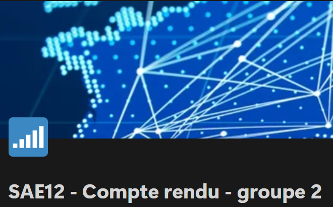
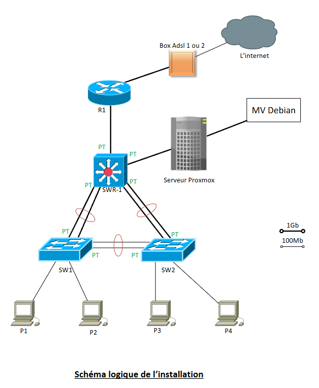
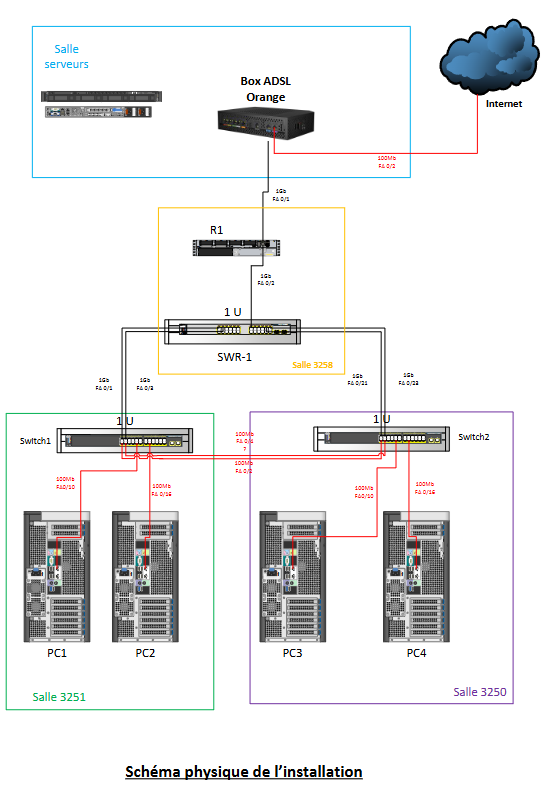
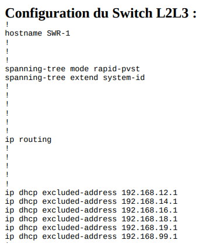

Présentation :
L'objectif de ce projet était de créer un petit réseau d'entreprise LAN par groupes de 5.
Pour cela
nous devions répondre à un schéma précis de réseau donné par notre professeur.
Celui-ci était composé
de
commutateurs, d'un routeur et d'un serveur Proxmox.
Avec ce projet, j'ai appris :
Ma Contribution :
Lors de ce projet j'ai tout d'abord réalisé les schémas physiques et logiques.
Puis, j'ai réalisé un
plan IP en fonction des demandes attendues.
Enfin, j'ai fais la configuration des commutateurs et du
routeur
pour mettre en place le réseau attendu. C'est-à-dire que j'ai configuré les liens agrégés, j'ai mis en place
le protocole RSTP, j'ai créer des VLANS en fonction du plan IP, j'ai configuré du routage inter-vlan. Enfin,
j'ai mis en place des normes de sécurité : mise en place de SSH, la configuration du VLAN non autorisé pour
les ports des commutateurs et routeurs que l'on n'utilisait pas et le blocage de Telnet de HTTP.
Ce
projet était difficile mais j'ai su rester rigoureuse et j'ai réussi à
remotiver mes camarades qui étaient en difficultées !
Preuves :
Bilan du projet :
Les livrables :
 Les configurations des switchs et du routeur :
Analyse du projet et auto-évaluation :
Ce projet m'a permit d'appliquer tout ce que j'avais appris lors des TP(=Travaux pratiques) du premier
semestre.
Il m'a permit de mobiliser toutes mes compétences et de les mettre en oeuvre dans un projet concret !
J'ai rencontrés des difficultées lors de la configuration du DHCP sur les switchs ainsi que lors de la configuration du routeur.
Ce premier projet de réseau était très difficile. Pour le prochain projet, je commencerai par faire un
plan méthodique des éléments à configurer car à la fin du projet, les configurations non achevées se
chevauchaient et étaient devenu difficiles à régler.